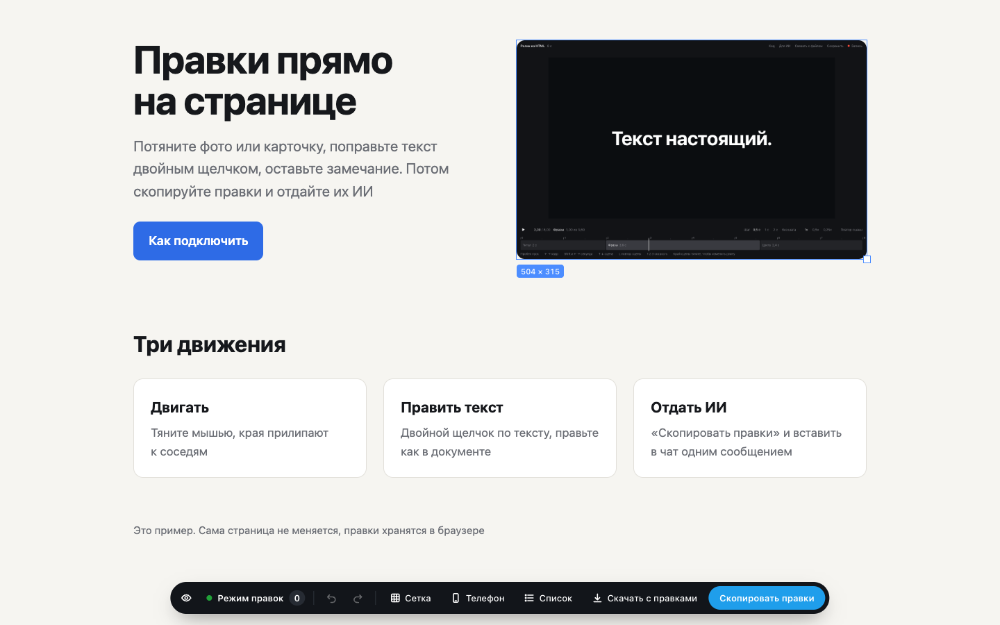

Правьте HTML-страницу прямо в браузере на компьютере, а потом скачайте готовый файл или отдайте правки ИИ. Для презентаций и сайтов, без установки программ
Попробовать на примере
Тяните фото и блоки, края прилипают к соседям и к сетке
Двойной щелчок правит текст, Alt + щелчок оставляет замечание
«Скачать с правками» даёт готовый файл, «Скопировать правки» отдаёт всё ИИ одним сообщением
Если правите сами или с ИИ в чате: ChatGPT, GigaChat, Claude
Выберите папку с презентацией или сайтом. Страница откроется в этой вкладке уже в режиме правок
Chrome спросит, загрузить ли файлы на сайт. Это его обычный вопрос: файлы остаются у вас в браузере и в интернет не уходят. Без вопроса можно просто перетащить папку на эту страницу
Если работаете с агентом в папке: Claude Code, Cursor, Codex, GigaCode
Отправьте агенту эту фразу из папки с презентацией
Агент откроет страницу в браузере уже в режиме правок
Если страница уже в интернете
Перетащите кнопку на панель закладок, откройте сайт и нажмите закладку
Панель закладок включается Cmd + Shift + B на Mac и Ctrl + Shift + B на Windows. Если сайт не пускает закладку, она скажет об этом
Без ИИ
Скачается та же страница, где уже стоят сдвиги, размеры и новый текст. Замените ею старый файл. Несколько страниц скачаются архивом
Замечания словами в файл не попадают, их отдайте ИИ
Для ИИ
В чат отправьте инструкцию, правки и файлы страниц со стилями, ИИ пришлёт исправленные файлы. Агенту достаточно вставить правки, он внесёт их сам